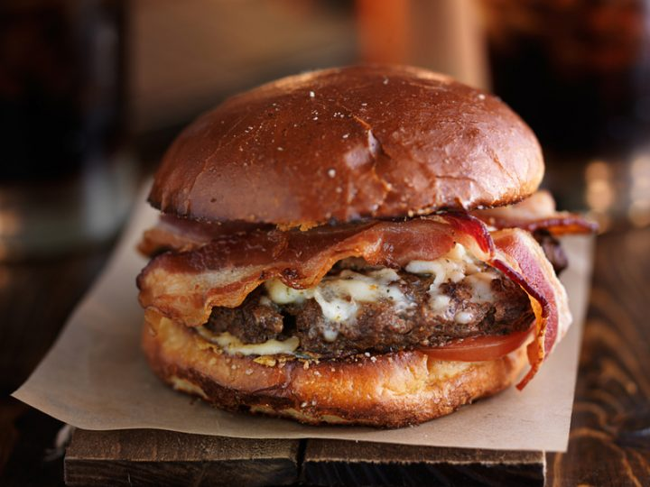

Dope Bacon CheeseBurger Recipe
Ingredients
Directions
Add the cream, hot sauce, Worcestershire, salt and pepper.
With clean hands, mix the meat well. Set aside.
Set aside.
Place the rolls face-down on a skillet over medium heat.
Lightly grill the rolls so they're nice and golden.
Let the rolls cool on a plate until you need them.
Form the beef mixture into 6 patties and place in the skillet, in batches if needed.
Allow each to cook about 4 minutes on the first side, flip them and place a slice of Cheddar on to melt.
Top each with 2 pieces of the bacon and top with the other half of the rolls.